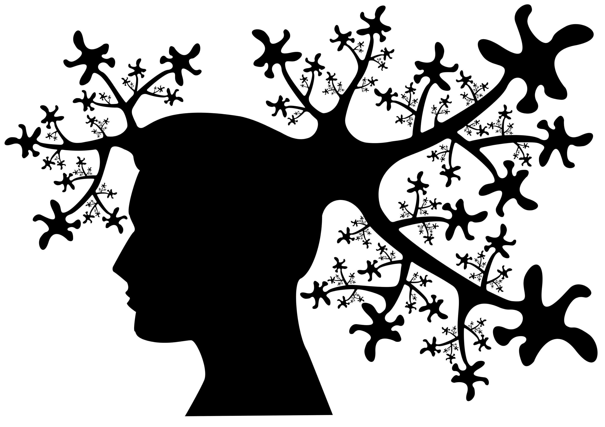

Arbre vectoriel
Ce projet avait pour objectif d'utiliser les outils vectoriels de Photoshop pour dupliquer une même forme en changeant sa rotation et sa taille et réaliser un arbre en utilisant cette forme comme feuilles.
J'ai réalisé ce travail seul, dans le cadre d'un projet universitaire.